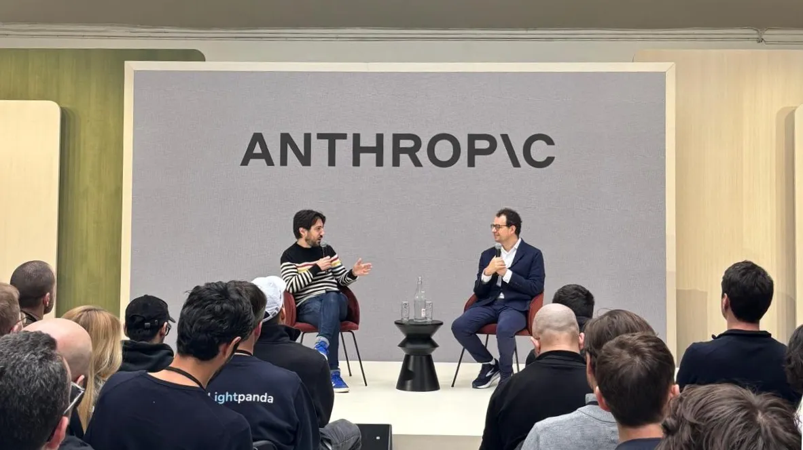

Ezen a weboldalon négy innovatív mesterséges intelligenciával foglalkozó vállalat kerül bemutatásra, amelyek különböző területekre specializálódtak. Mindegyik cég saját megközelítéssel alkalmazza az AI technológiát, hogy hatékonyabbá, gyorsabbá és intelligensebbé tegye a modern digitális szolgáltatásokat.
A bemutatott vállalatok jó példái annak, hogy ez a technológia milyen sokféleképpen használható fel a valós problémák megoldására és új lehetőségek megteremtésére.A mesterséges intelligencia napjaink egyik leggyorsabban fejlődő technológiája, amely alapjaiban alakítja át a gazdaságot és a mindennapi életet.
A bemutatott vállalatok jó példái annak, hogy ez a technológia milyen sokféleképpen használható fel a valós problémák megoldására és új lehetőségek megteremtésére.A mesterséges intelligencia napjaink egyik leggyorsabban fejlődő technológiája, amely alapjaiban alakítja át a gazdaságot és a mindennapi életet.

Az Anthropic egy amerikai, mesterséges intelligenciával foglalkozó vállalat, amelyet 2021-ben alapított több korábbi OpenAI kutató és mérnök. A cég székhelye San Franciscóban található, és fő célja olyan fejlett rendszerek fejlesztése, amelyek biztonságosak, megbízhatóak és az emberi értékekkel összhangban működnek.
A vállalat elsősorban nagy nyelvi modellek (LLM-ek) fejlesztésével foglalkozik. Legismertebb megoldásuk a Claude AI-asszisztens család, amely az alábbi feladatokban nyújt segítséget:
A cég egyik különlegessége az úgynevezett AI-alignment kutatás. Ennek érdekében fejlesztették ki a „Constitutional AI” megközelítést, amely szigorú etikai szabályok és alapelvek segítségével irányítja az algoritmusok viselkedését, garantálva a felhasználói biztonságot.
A cég egyik különlegessége az úgynevezett AI-alignment kutatás. Ennek érdekében fejlesztették ki a „Constitutional AI” megközelítést, amely szigorú etikai szabályok és alapelvek segítségével irányítja az algoritmusok viselkedését, garantálva a felhasználói biztonságot.
[Vizuális esemény] A videó elején gyors, feszült vágásokkal különböző emberek, tárgyak és helyzetek villannak fel. Egy férfi néz ki az ablakon, miközben a képernyőn a "PROBLEMS" (Problémák) szó jelenik meg zöld, digitális betűkkel. Látunk egy írógépet, ami a "Prob" szót gépeli, egy papírra firkáló ceruzát, egy számítógépes asztalt egy szomorú arcot ábrázoló "problems.crpt" fájllal, egy földön fekvő fiút, és egy kék ipari tartályt "Intruzív gondolatok visszhangkamrája" felirattal. Ezt szétszórt könyvek, egy végtelenül nagyító fraktál animáció, egy zongorahangoló férfi, és egy bonyolult családfát elemező nő követi. Egy zongora zuhan le egy épület tetejéről.
Narrátor hangok (több hang folyamatosan ismételve, egymásra vágva): "Soha nem volt még rosszabb időszak arra, hogy problémád legyen."
[Vizuális esemény] A képernyő elsötétül, a zene egy ritmusos, optimista jazz/funk ütemre vált.
Narrátor (nyugodt, határozott férfihang): "Soha nem volt még jobb időszak..."
[Vizuális esemény] Egy drón zuhan le és törik össze az utcán. Egy nő belép egy könyvekkel teli szobába. Fiatalok egy kerékpár vázát tervezik egy műhelyben. Lebegő sakkfigurák veszik körbe egy szemüveges fiú arcát.
Narrátor: "...egy jobb időszak arra, hogy problémád legyen."
[Vizuális esemény] Egy idősebb férfi fekszik a földön, rengeteg szétszórt papír között, és jegyzetel. Egy laptop képernyője villan fel a Claude AI felületével, amin épp egy komplex feladatot oldanak meg. Egy apa és két gyermeke egy modellrakétát épít.
Narrátor: "Arra, hogy elakadj. Hogy túlterhelt legyél. Hogy türelmetlen legyél."
[Vizuális esemény] Nő távcsővel figyeli a napfényes lombkoronát. Festőművész dolgozik a stúdiójában. Férfi egy hajón mikroszkóp mellett jegyzetel. Egy víz alatti kelperdő 3D-s, adatalapú ábrázolása jelenik meg.
Narrátor: "Hogy kifogyj az ötletekből. Vagy a mélységből, a levegőből."
[Vizuális esemény] Két futó edz egy földúton, a videó az ő tüdejük 3D-s röntgenképét vetíti rá a testükre. Egy autóban ülő ember laptopon figyeli a futók teljesítményadatait. Sötét laboratórium agyi szkenneléseket mutató monitorokkal, majd egy férfi arca látszik EEG-sapkában.
Narrátor: "Soha nem volt még jobb időszak arra, hogy valamilyen egészségügyi problémád legyen. Csak nézd meg a folyó kutatásokat."
[Vizuális esemény] Egy zenekar próbál. Emberek állnak egy laptop körül, amin a "CLAUDE CODE" (Claude Kód) felirat látható, és az AI épp kódot ír. Férfi bonyolult szintetizátorokat és hangmérnöki pultot állít be. A korábban látott család sikeresen kilövi a játékrakétát az égre a sivatagban.
Narrátor: "Arra, hogy ne legyenek képesítéseid, se erőforrásaid."
[Vizuális esemény] Egy kislány egy 3D-s modellt vizsgál a laptopján. Egy sivatagi sárga útjelző tábla felirata: "UNIVERSE CLOSED USE RAINBOW" (Az univerzum zárva, használd a szivárványt). Hatalmas, látványos galaxis-robbanás a világűrben. Egy nő az ujjával egy csillagkép-kivetítés pontjait köti össze.
Narrátor: "Arra, hogy ne értsd. Hogy jelentéktelennek érezd magad."
[Vizuális esemény] Nő sétál egy hatalmas, futurisztikus, lyukacsos építményben. Táncosok mozognak egy teremben, miközben a testükön mozgáskövető pontok és vonalak jelennek meg, egy gomb kíséretében, amelyen a '</> Code' (Kód) felirat áll.
Narrátor: "Hogy nyughatatlan legyél."
A Google DeepMind a világ egyik vezető mesterséges intelligencia kutatóközpontja, amely a Google DeepMind és a Google Brain 2023-as egyesítéséből jött létre. A londoni és Mountain View-i székhelyű szervezet célja, hogy áttörő AI-rendszereket fejlesszen az emberiség számára releváns problémák megoldására, a tudományos kutatástól kezdve az egészségügyen át a kreatív alkotásig.
A vállalat különösen kiemelkedő teljesítményt nyújt a képi és videó generálás területén. Modelljei mint az Imagen és a Veo az iparág legfejlettebb vizuális generatív rendszerei közé tartoznak:
A vállalat különösen kiemelkedő teljesítményt nyújt a képi és videó generálás területén. Modelljei mint az Imagen és a Veo az iparág legfejlettebb vizuális generatív rendszerei közé tartoznak:
[Vizuális esemény] A videó egy sor gyors, szürreális és filmszerű jelenettel indul: egy kislány egy óriási rájaszerű lényen lovagol, majd egy Jeti sétál a londoni piros buszok között. Ezt egy vízesést ontó, repülő kalózhajó, majd egy füstből előbukkanó óriási szörny követi, akit egy katona figyel.
Narrátor (férfihang): "Elképzelheted... Megalkothatod..."
[Vizuális esemény] Egy irodai dolgozó nő ugrik a levegőben egy lebegő kávésbögre után. Ezután egy kisfiú lovagol egy medve hátán a hóviharban. A képernyőn megjelenik a felirat: "Introducing Gen-4.5 Image to Video" (Bemutatkozik a Gen-4.5 Képből Videó).
Narrátor: "Most már meg is teheted."
[Vizuális esemény] Gyors vágások következnek különféle képtípusokról: egy zuhanó ejtőernyős, egy épületből kizuhanó teherautó, egy fagylaltos kocsi, egy okostelefonnal lefotózott festmény egy múzeumban, egy ceruzarajz egy fiúról, egy vízben gázoló robotkutya, egy szamuráj egy sárga virágmezőn, és egy anime stílusú lány egy óriási kék robot előtt.
Narrátor: "Vegyél bármilyen képet, legyen az valódi, generált, ikonikus, felvázolt, firkált, renderelt vagy illusztrált... és keltsd életre úgy, ahogy csak akarod."
[Vizuális esemény] Egy farkas sétál a hóban, majd egy farkasbőrbe öltözött kisfiú arca látszik. Ezután a képernyő közepén megjelenik egy beírt parancssor: "egy ló fut át a galérián!". A háttérben egy nő ül a telefonját nyomkodva egy múzeumi padon, majd a parancs hatására egy fehér ló vágtat be a terembe.
Narrátor: "Mint például: egy ló fut át a galérián!"
[Vizuális esemény] Portrék következnek női arcokról, majd egy epikus csatajelenet lovasokkal a hóban, ezután egy rendőrautós üldözés esőben, egy tűzköpő sárkányon lovagló tűzoltó, és egy utcán menetelő óriásrobot, ami elől emberek menekülnek.
Narrátor: "Generálj konzisztens, fotórealisztikus karaktereket, epikus nagytotálokat, szédítő üldözéseket, nagy költségvetésű vizuális effekteket..."
[Vizuális esemény] Egy férfi arca látható eperjelmezben, majd egy másik férfi citromjelmezben, egy zöld üdítőt tartva és mosolyogva. Ezután egy majom nyomkodja a gombokat egy liftben.
Narrátor: "...termékfotókat és reklámokat, vagy akár adj neki hiperspecifikus utasításokat."
[Vizuális esemény] Egy férfi ül egy taxi hátsó ülésén és a telefonját nézi. A kamera hirtelen, svenkelve (whip pan) balra ránt, és a volánnál egy majom ül. A kamera visszaránt a férfira, akit most hirtelen malacok vesznek körül az ülésen. A kamera ismét előre ránt a sofőrre, aki most már egy hatalmas malac. A taxi hirtelen megtelik vízzel, a férfi és az állatok süllyedni kezdenek.
Narrátor: "Mint például: egy férfi a taxi hátuljában. Gyors svenk a majom sofőrre. Gyors svenk vissza a férfira, akit malacok vesznek körül. Gyors svenk vissza a sofőrre, aki most már egy malac. Igen, ezt is meg tudja csinálni."
[Vizuális esemény] Egy mentőcsónakban egy kutya, egy mosómedve, egy nyúl és egy sül utazik a tengeren. Ezt egy sci-fi csatatér követi lángoló űrhajókkal, majd egy miniatűr kisfiú visz egy hatalmas csokiszeletet az asztalon. Utána egy hörcsög eszi ugyanezt a csokit.
Narrátor: "Bármilyen történetet is akarsz elmesélni, bármilyen filmet akarsz készíteni, reklámot akarsz kiadni..."
[Vizuális esemény] Búvár lép ki egy vízen lebegő faházból, majd egy anime stílusú jelenet, utána egy szőrös, pilótaszemüveges állat. Egy utcai jelenetben tucatnyi autó repül a levegőben, mintha tornádó kapta volna fel őket. Végül egy Forma-1-es pilóta vezet az esőben, miközben egy majom hátulról eltakarja a szemeit, a férfi pedig kiabál.
Narrátor: "...vagy egy véletlenszerű ötletet szeretnél felfedezni, csak mert talán érdekes lenne látni pontosan úgy, ahogy a fejedben él. Megteheted."
[Vizuális esemény] Egy fehér, tollas-szőrös, földönkívüli lény arca néz a kamerába. A képernyőn felirat: "Gen-4.5 Image to Video". Gyors villanásként egy lángoló űrhajó csapódik egy felhőkarcolóba, végül egy robot lő lézerfegyverrel a dzsungelben. A videó az "Available now" (Már elérhető) felirattal zárul.
Narrátor: "A Gen-4.5 Képből videó modellel."